汇特讯-APP
使用手册

北京七山创智科技有限公司
目 录
第一章 基本介绍
1.1汇特讯简介
“汇特讯”是一款基于公网智能手机的多媒体通信应用软件。具有群组语音对讲、通话功能（VoIP语音/VoIP视频/移动电话）、位置定位、短消息、文件传输、一键告警、移动视频监控等多种功能，支持Android和iOS操作系统，并可基于用户级别、群组和权限进行管理。
本文档主要为“汇特讯”的用户提供相关功能及操作说明。
1.2功能特点
- 覆盖广：利用公网（2G、3G、4G或者WiFi）实现集群通信，支持跨地区广域集群调度，克服了专网集群系统的信号覆盖区域限制
- 适应性强：无需定制专业终端，适配所有智能手机；支持外接设备，包括：有线手咪、有线耳机
- 功能强：支持集群对讲、文件传输、视频单呼、短消息、语音单呼、调度台位置上报等多媒体集群通信功能
- 容量大：系统容量大，支持大于300人/组实时对讲
- 可管理：与调度台结合，支持专业的行业作业管理和指挥调度应用
- 可扩展：通过网关设备，可与传统集群专网、电台、监控摄像头等专用终端互联互通
- 多语言：支持简体中文、英文，且用户可选择让APP语言与系统语言相一致
1.3版本信息
- 大小：53.8M
- 版本：3.8.86.0
- 系统要求：Android5.0及以上、iOS12.0及以上
第二章 登录及主界面
2.1登录
“汇特讯”APP为用户提供自动和手动登录两种版本。
- 自动登录：只要是开通“汇特讯”业务的终端版本，安装“汇特讯”APP自动登录版本的客户端后，点击图标，无需用户输入，即可直接登录；
- 手动登录：终端安装好手动版本的客户端后，需要用户手动输入账号、密码后通过服务器验证才能登录。
登录后，默认显示对讲界面；
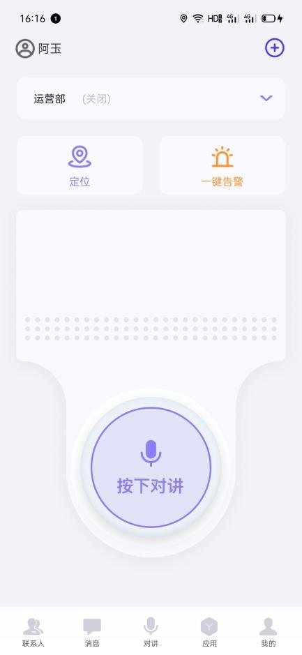
图2-1 “汇特讯”登录默认对讲界面
- 版本自动更新
若系统检测到新版本，登录时会提示用户是否下载更新：
“汇特讯”APP主要由5部分构成：联系人、消息、对讲、应用、我的。用户可通过点击页面下方tab区按钮进入相应的功能页面切换。
图2-2“汇特讯”tab区
2.2网络连接异常提示
“汇特讯”登录中或登录成功后，均会在手机导航栏和下拉提示栏中显示“汇特讯”的图标及登录信息。
- 导航栏：
- 下拉提示栏：
用户名@用户当前所在的对讲组。
当登录后发生网络链接异常与服务器连接异常时，在对讲界面显示提示信息。
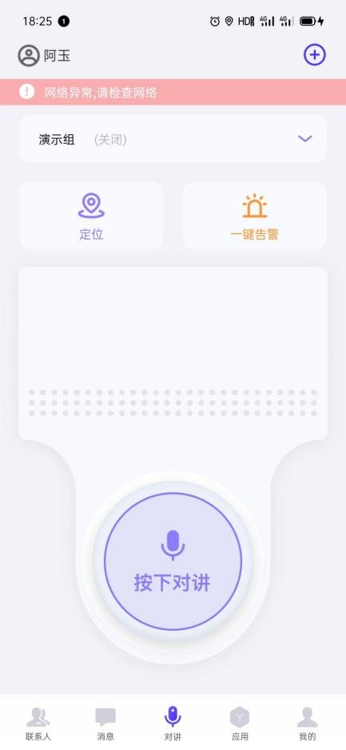
图2-3 网络连接异常提示
2.3主要功能图标
图标 | 名称 | 图标 | 名称 | |
集群对讲 | 地图定位 | |||
联系人 | 地图-按比例放大 | |||
信息 | 地图-按比例缩小 | |||
我的（设置） | 地图-我的位置 | |||
语音通话/临时对讲 | 创建对讲组/发起临时对讲 | |||
视频通话/视频上传/视频查看 | 显示拨号盘 | |||
视频通话中-扬声器 | 视频通话中-关闭麦克风 | |||
视频通话中-切换前后摄像头 | 应用列表 | |||
对讲-抢话按钮 | 一键告警 |
第三章 用户操作指南
3.1集群对讲
集群对讲是“汇特讯”的重要基本功能。管理员可为终端用户的对讲组及每位成员设置不同的权限等级，组内高优先级的成员，可以夺取优先级低的成员正在占用的话权。
用户登录汇特讯默认进入对讲界面：
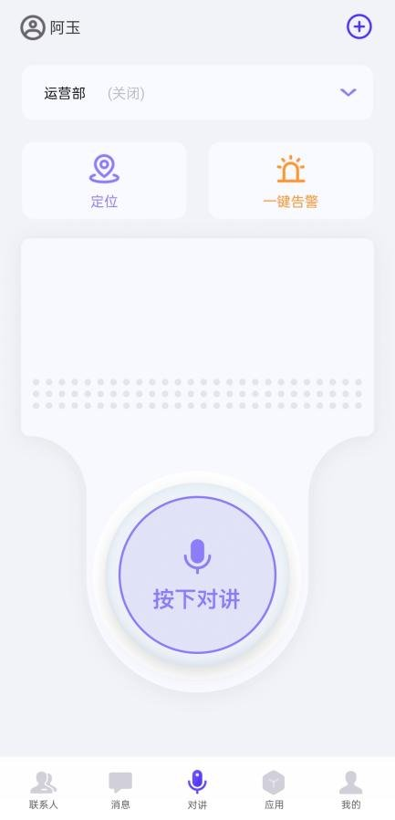
图3-1 “汇特讯”对讲界面
3.1.1切换对讲组
- 对讲组列表：点击界面正上方当前对讲组，可显示对讲组列表，可上下滑动显示其他对讲组；
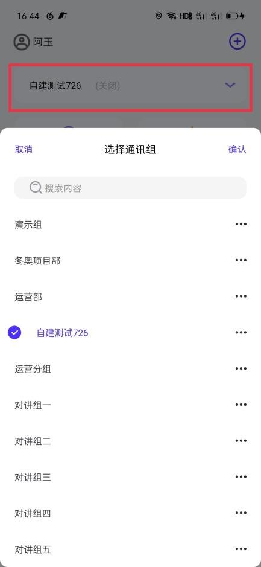
图3-2 “汇特讯”对讲组列表显示
在对讲组列表中点击任意组名称，点击列表右上角确认，可将对讲组切换为选中的对讲组。
3.1.2查看对讲组成员
- 对讲组成员列表：在对讲组列表中，点击右侧…可弹出被点击对讲组的成员列表。
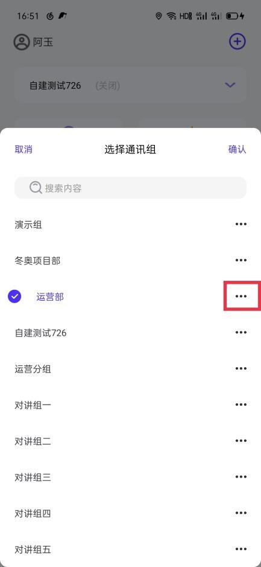
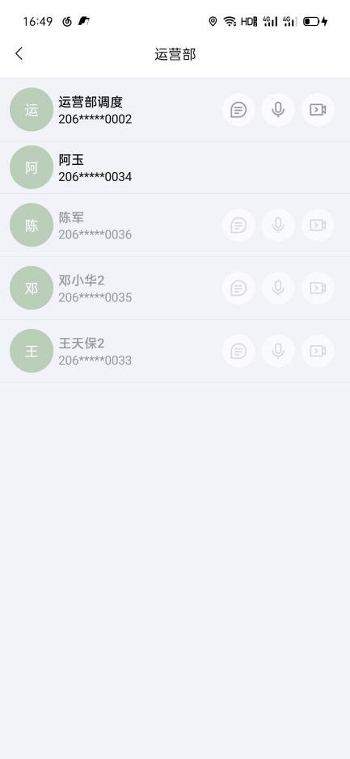
图3-3 对讲组成员列表
- 黑色：表示该成员在线；
- 灰色：表示该成员不在线。
用户可以通过成员列表中每个成员后面的功能按钮发起相应的信息、语音通话、一对一临时对讲、视频功能操作。
点击某一用户可弹出用户详情界面。
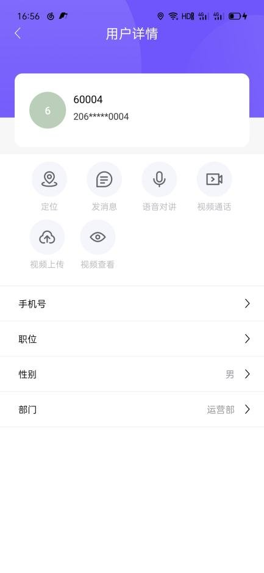
图3-4 用户详情界面
3.1.5创建对讲组
在对讲界面点击右上角图标“+”，选择【创建对讲组】，弹出用户选择界面，选择用户（可按照部门或者联系人进行选择）并填写对讲组名称（对讲组名称不能重复），单击【确定】；
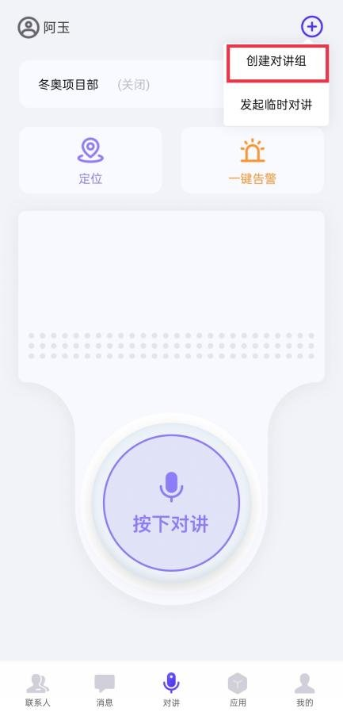
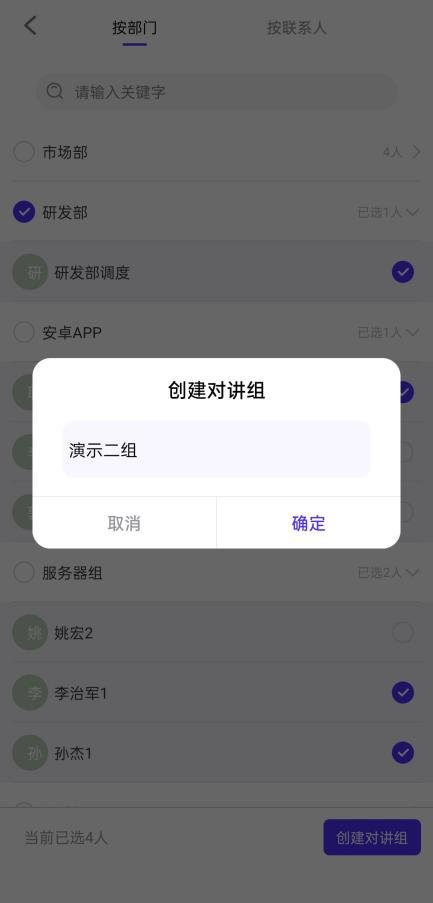
图3-6 创建对讲组界面
创建对讲组成功后，“汇特讯”会留在该组的列表页，点击右上角按钮“…”，可对该组进行添加成员、删除成员、修改群名称、解散本群的操作。
- 解散本群：如果当前用户是该组的创建者，按钮显示【解散本群】；
- 退出群聊：如果当前用户是被其他用户添加到该组，按钮显示【退出群聊】，不可退出调度台用户创建的组。
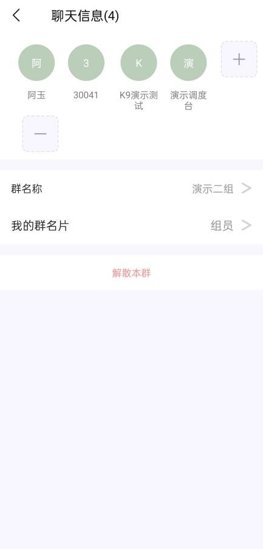
图3-7 自建群组操作界面
创建对讲组成功后，所建对讲组会在“联系人-对讲组-自建群组”中显示。
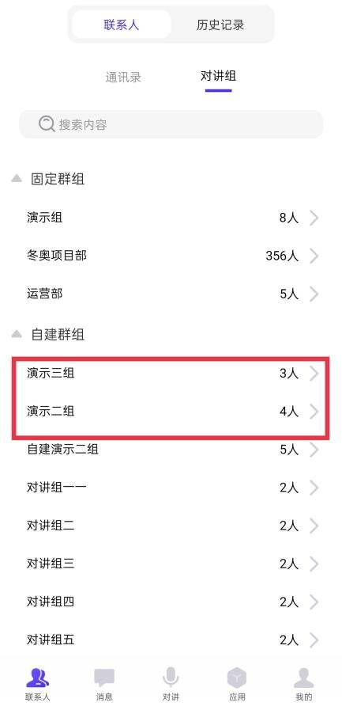
图3-8 自建群组列表界面
3.1.3对讲抢话
当需要抢话时，按下汇特讯【按住讲话】按钮，当听到“嘀”的一声提示音时，表明抢话成功，可以开始讲话，直到讲完话松手释放话权。
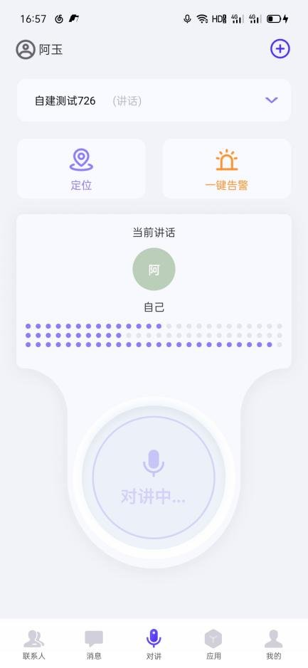
图3-5 对讲界面
- 当前讲话：显示当前的话权人名称；
- 用户状态：当前用户所在对讲组的状态有发起中、讲话、听讲、排队、空闲、关闭6种状态；
- 发起中：发起对讲时，当前用户处于发起中的状态；
- 讲话：当前用户获得话权，处于讲话状态；
- 听讲：当前有人在讲话，当前用户处于听讲状态；
- 排队：当前组中有其他用户在讲话，当前用户按下对讲键，处于抢话排队状态；
- 空闲：对讲组内没有人讲话；
- 关闭：对讲组为关闭状态。
- 音频频谱：根据音量大小动态显示。
3.1.4释放话权
对讲发言时，【按下对讲】按钮是一直被按下的，当发言结束，松开按钮即可释放话权。
3.1.6创建临时对讲
在对讲界面点击右上角图标“+”，选择【创建临时对讲】，弹出用户选择界面，选择用户（可按照部门或者联系人进行选择）并填写临时对讲名称；
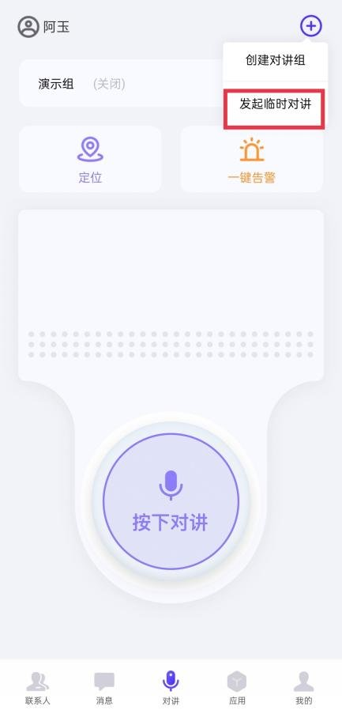
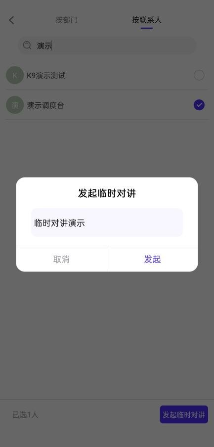
图3-9 创建临时对讲界面
单击【发起】进入临时对讲界面，可以开始临时对讲；过程中可以点击图标“+”添加新成员。
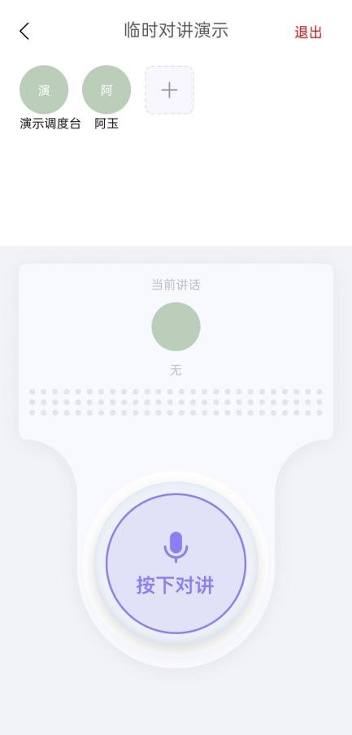
图3-10 临时对讲界面
接听临时对讲：当有其他用户发起临时对讲时，当前终端收到临时对讲邀请，点击【接听】开始临时对讲，点击【挂断】拒绝该临时对讲。
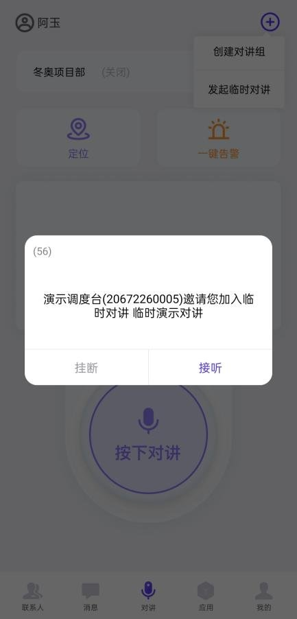
图3-11 接收临时对讲呼叫界面
3.2地图定位
地图定位界面，需要从对讲界面的【定位】按钮点击进入。
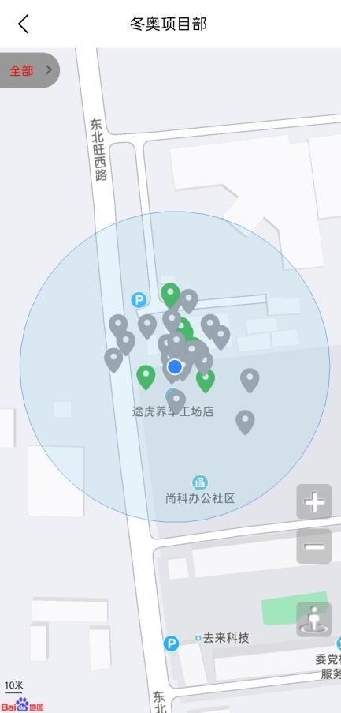
图3-12 地图定位界面
授权使用地图定位功能的“汇特讯”用户，可以实时查看当前组内各成员的位置及状态信息，同时可以在地图界面对选中用户发起语音、视频等呼叫。
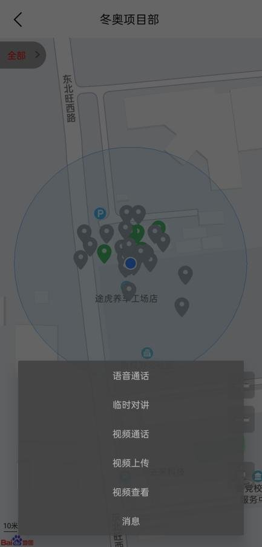
图3-13 地图界面对用户的操作
在对讲组用户详情页，点击【定位】也可直接跳转到地图页定位，此时的成员是被选中的状态，若该用户没有上报定位或没有定位功能，则提示“无此用户定位信息”。
地图定位的主要功能有：
- 筛选用户：折叠状态，可以在地图左上角按照用户的在线/离线状态，来筛选显示；默认“全部”，即显示在线和离线的所有用户；“在线”只显示在线用户，“离线”只显示离线用户。
- 查看当前组及组内成员在地图上的位置信息；
- 查看用户终端的名称以及该终端在此位置的最后上报时间；
- 点击地图中的成员，在界面下方显示该成员名称，当前时间，以及【功能】按钮。点击【功能】显示可对该成员进行的操作，点击即可发起相应操作。
地图中：
- 绿色图标：代表在线的用户；
- 灰色图标：代表用户离线以及离线时的最后位置；
- 棕色图标：代表用户正在讲话；
- 蓝色图标：代表用户被选中。
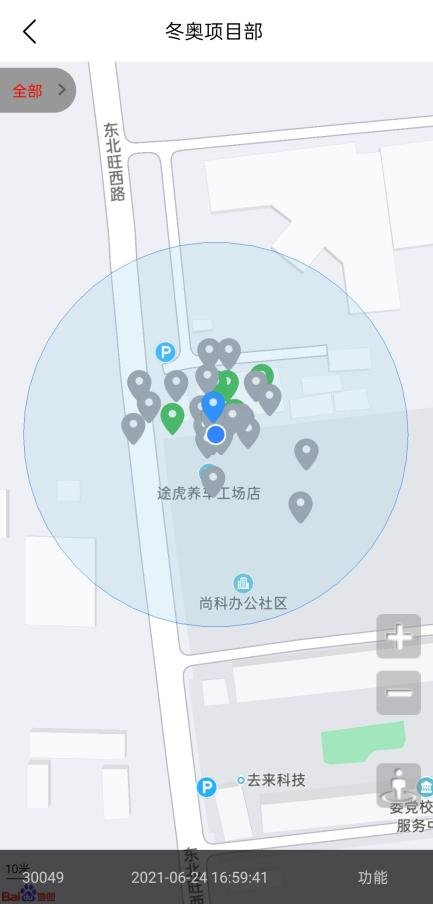
图3-14 地图界面颜色展示
3.3一键告警
一键告警呼叫，需要从对讲界面的【一键告警】按钮点击发起。通过调度配置管理程序，可为终端用户设置一键告警号码。设置告警号码后，点击【一键告警】，“汇特讯”将会向告警号码进行报警（语音告警或者视频告警），接收告警的用户将会响起警报音。
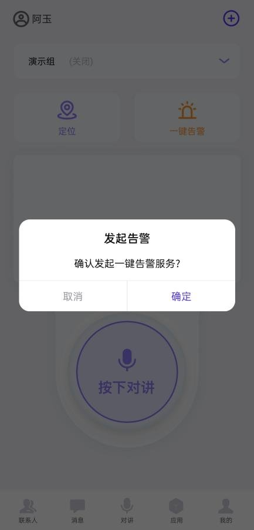
图3-15 发起一键告警界面
3.4联系人
联系人界面由联系人和历史记录组成。
3.4.1联系人
- 通讯录：通讯录界面显示企业部门和未添加部门的用户列表。
- 搜索：在界面“搜素内容”
在【通讯录】列表中，黑色表示用户在线，可通过点击右边按钮对该用户发送消息、语音通话/临时对讲、视频通话/视频上传/视频查看的操作。
点击某用户的头像或名称/号码，进入用户详情列表，列出用户姓名、号码（加密显示）、手机号、职位、性别、部门等信息。
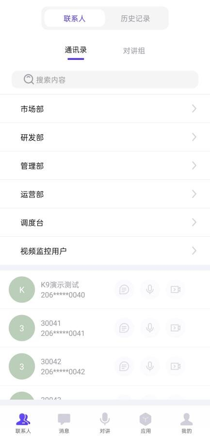
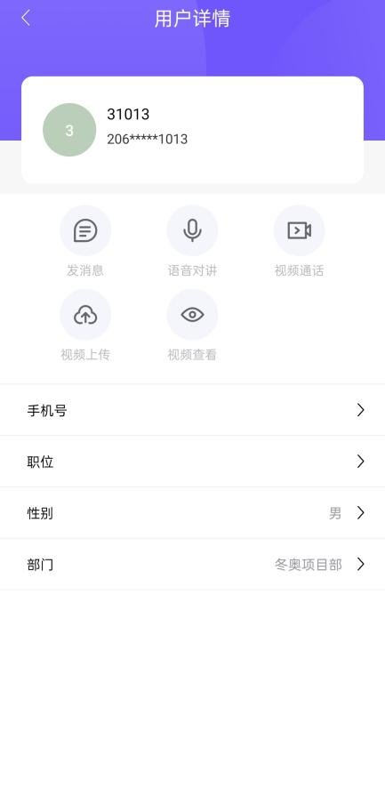
图3-16 通讯录界面
- 对讲组：对讲组列表分为固定群组和自建群组两部分。固定群组列表中展示用户所在的运营平台创建的对讲组；自建群组列表中展示用户自己创建或者企业内其他用户创建的包含自己的自建组。
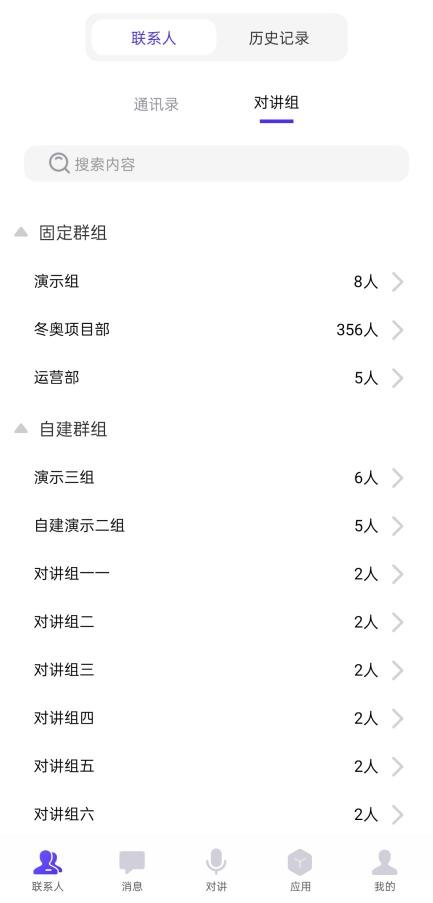
图3-17 对讲组界面
3.4.2历史记录
历史记录界面可显示全部记录或者只查看未接通话。
- 全部记录：显示当前用户的所有通话记录，也包括临时对讲；用户还可以通过列表中每个成员后面的功能按钮发起相关的操作；
- 清空：点击右上角【清空】按钮清空当前的全部记录；
- 拨号盘：点击左下角的拨号盘按键可以显示拨号盘，用户在拨号盘中输入对端号码，发起语音/视频呼叫功能。
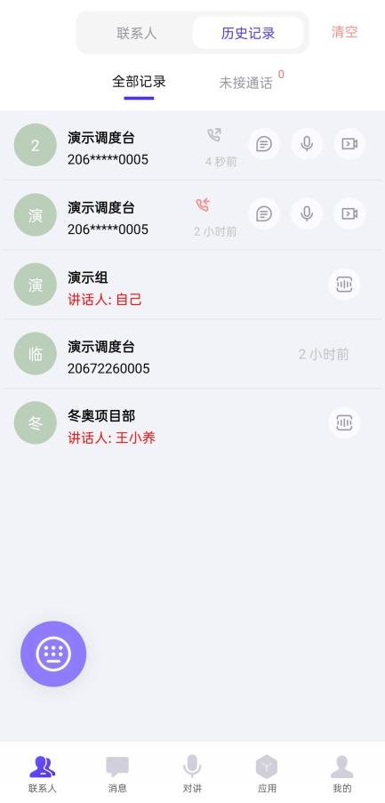
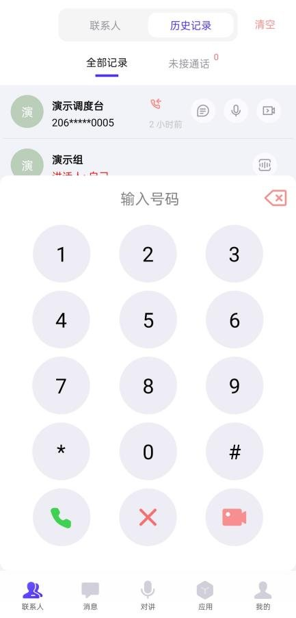
图3-18 历史记录与拨号盘界面
- 未接通话：用户错过的语音呼叫、视频呼叫的请求，将会在未接通话页面显示。
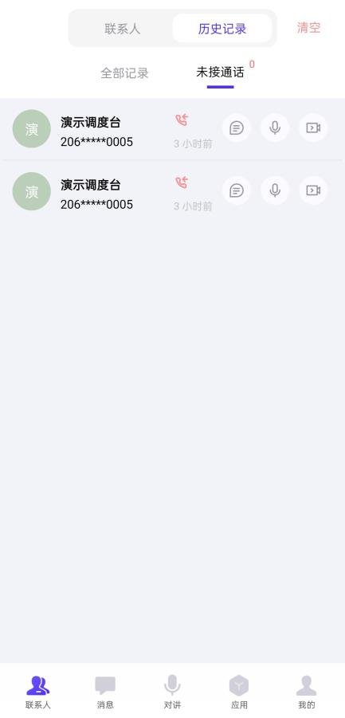
图3-19 未接通话界面
3.5通话
3.5.1语音通话
语音通话是“汇特讯”为用户提供的基本业务之一。
用户可以通过以下几种方式发起语音呼叫：
- 联系人界面：点击某联系人右侧的语音呼叫按钮；
- 用户详情界面：点击语音对讲按钮；
- 通话记录界面：点击某次历史记录右侧的语音呼叫按钮；
- 对讲界面：进入组成员列表，点击某组成员右侧的语音呼叫按钮；
- 拨号盘：在拨号盘输入号码后，点击语音呼叫按钮。
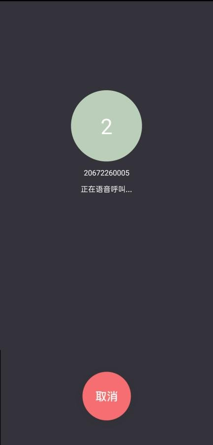
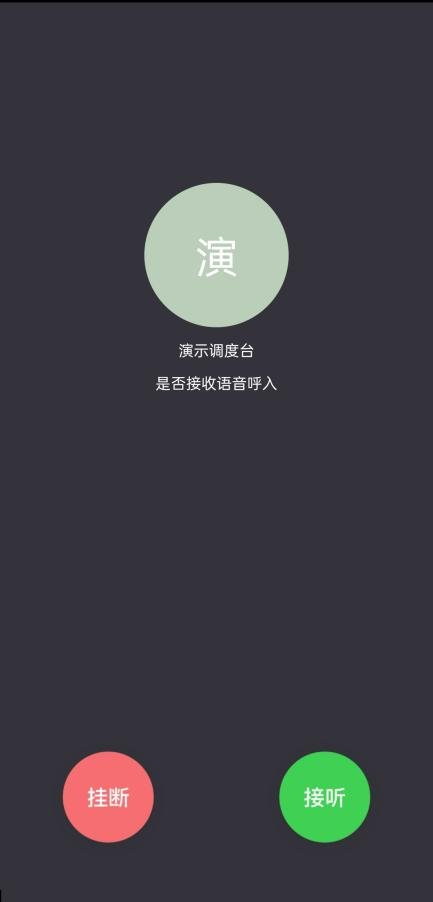
图3-20 “汇特讯”语音呼出、语音呼入界面
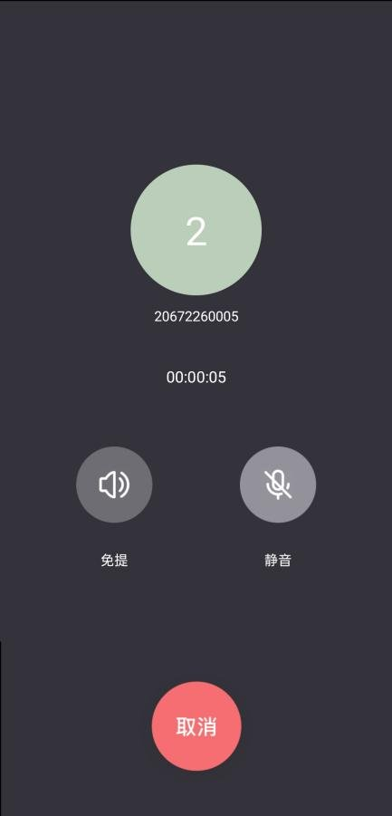
图3-21 “汇特讯”语音通话界面
3.5.2视频通话
视频通话是“汇特讯”为用户提供的基本业务之一。
用户可以通过以下几种方式发起语音呼叫：
- 联系人界面：点击某联系人右侧的语音呼叫按钮；
- 用户详情界面：点击语音对讲按钮；
- 通话记录界面：点击某次历史记录右侧的语音呼叫按钮；
- 对讲界面：进入组成员列表，点击某组成员右侧的语音呼叫按钮；
- 拨号盘：在拨号盘输入号码后，点击语音呼叫按钮。
在视频通话过程中，可以做如下控制：
- 扬声器的打开和关闭；
- 麦克风的打开和关闭；
- 视频的停止发送和发送；
- 前后摄像头的切换。
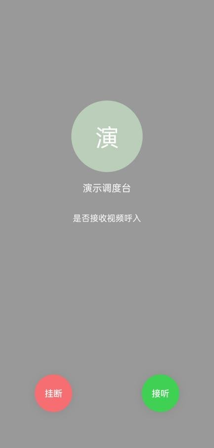
图3-22 “汇特讯”视频呼出、视频呼入界面
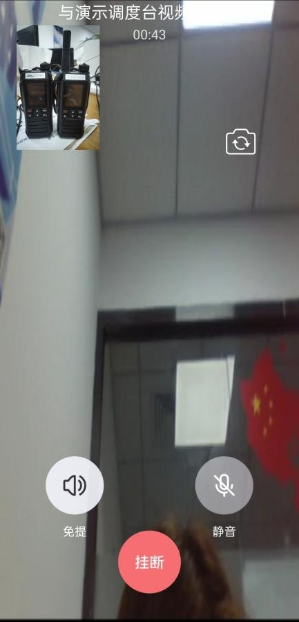
图3-23 “汇特讯”视频通话中界面
3.5.3视频查看和视频上传
- 视频查看：APP用户可以通过视频查看其它APP用户或者GVS摄像头所拍摄的敖，本端不发送视频；发起视频查看操作的路径与视频通话一致；
视频查看时仅视频无语音，终端可同时接听对讲组中的对讲声音；在视频查看窗口中，用户可通过终端设备上的PTT键，或者手机上音量“-”键抢占和释放话权；
- 视频上传：APP用户可将本端视频影像上传给调度台或是其他APP用户，不接收对端视频；视频上传时无声音，可接听一路对讲或临时对讲；在同时发起视频上传和对讲时，音量“-”键可用来抢话权。
3.6消息
用户点击页面下方tab区【消息】按钮，可以进入消息操作界面，或者通过以下几种方式：
- 联系人界面：点击某用户右侧的消息按钮；
- 用户详情界面：点击发消息按钮；
- 通话记录界面：点击某次历史记录右侧的消息按钮；
- 对讲界面：进入组成员列表，点击某组成员右侧的消息按钮。
用户可以在消息界面查看和发送的内容包括：短消息、图片、视频、文件、定位消息等。
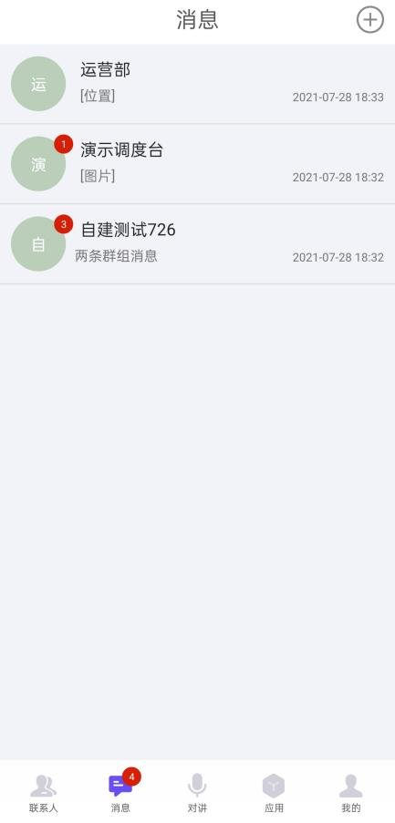
图3-24 消息界面
3.6.1新建消息
在消息界面点击右上角图标“+”，可选择群组聊天或新建群聊。
- 群组聊天：用户可向已有的对讲组或者自建群组发起群组聊天；
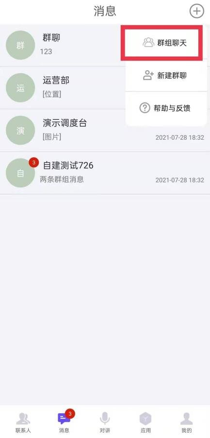
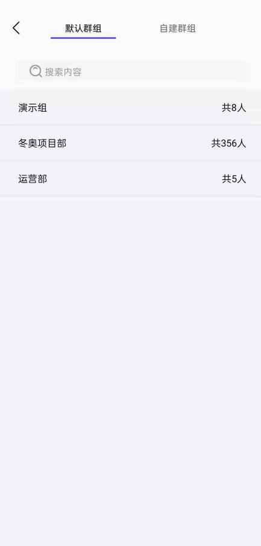
图3-25 发起群组消息界面
- 新建群聊：用户可以自定义选择用户发起群聊。选择1个用户时，发起一对一的消息；选择多个用户时，发起群聊消息，同时创建新的自建组。
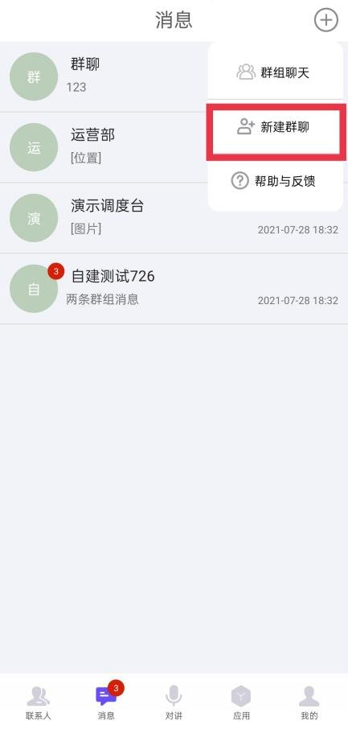
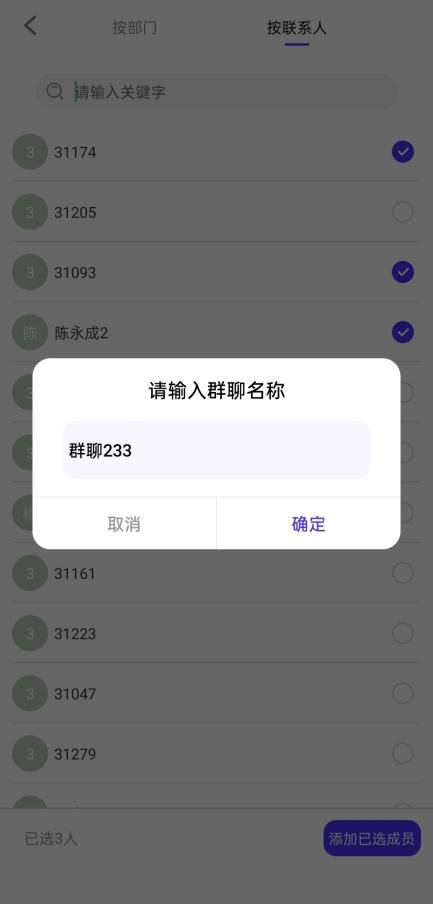
图3-26 新建群聊界面
用户可发送的消息内容如下：
- 发送文字消息：在“输入框”中编辑信息内容；
- 图片：点击【图片】，进入系统相册图片列表，可选择需要发送的图片；
- 单击列表中某个图片显示被勾选，再次单击该图片取消选择；
- 用户可点击左下角【预览】，查看选中图片；
- 在预览界面点击【使用照片】或者点击【返回】退回到图片列表界面；
- 点击【发送】发送选择的照片；
- 视频：点击【视频】，进入系统相册本地视频列表，选择需要发送的视频；
- 单击要发送的视频，显示为勾选状态，再次单击取消选择；
- 选好视频后点击【使用】，发送视频；
- 文件：点击【文件】进入文件选择界面，点击某个文件即可发送；
- 拍照：点击【拍照】打开系统相机，拍摄照片后点击“√”发送；
- 摄像：点击【摄像】打开摄像录制，点击录制按钮开始录制，再次点击结束录制并发送（录制视频不超过1分钟）；
- 位置：点击【位置】进入地图界面，默认定位到用户当前所在的位置，点击右上角【发送】，发送用户位置信息；用户也可在搜索框输入关键字，搜索查找并发送其他位置。
说明：在信息模块，所传输文件的大小限制在15M以内。
3.6.2消息列表
- 列表显示：消息列表中显示当前用户与其他用户或者群聊的往来消息，包括对端用户/群组的头像、名称以及最近一条消息内容和时间；
- 列表操作：
- 单击某条消息，可进入与该用户/群组的消息会话界面，显示所有会话消息；
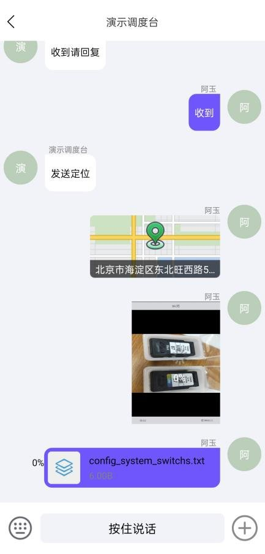
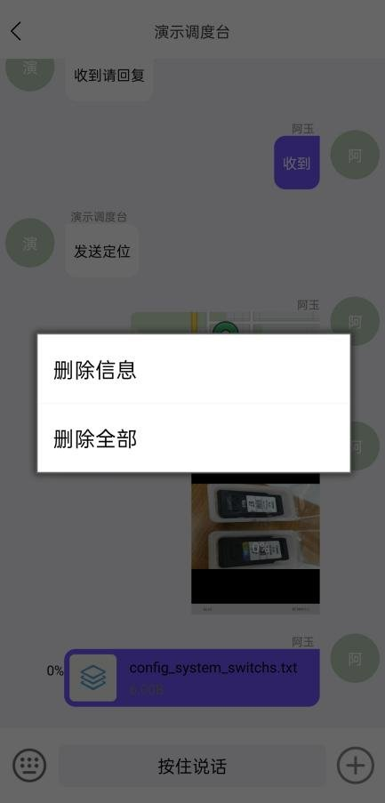
图3-27 消息会话界面
- 长按消息会话界面中的某条消息，弹出“删除”框；
【删除信息】：删除选中的这条信息；
【删除会话】：删除与该用户/群组的所有往来消息；
- 在消息会话界面，点击视频、语音消息可进行播放；图片消息可点击打开查看原图；定位消息可点击打开地图，展示具体位置；点击后若无法直接打开则提示“不支持打开该类型文件”。
说明：发送失败的文件，前端会出现红色感叹号，点击感叹号可选择是否重新发送本条消息。
- 长按消息列表中的某条消息，弹出“信息选项”；
- 【清空会话】：删除与选中用户/群组的所有来往消息内容；
- 【清空所有信息】：删除与所有用户/群组的往来消息内容，即清空消息列表。
- 长按消息列表中的某条消息，弹出“信息选项”；
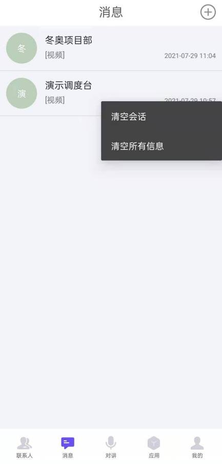
图3-28 消息选项界面
3.7视频会商
App可通过主动发起或受邀加入会议，进入APP后，在对讲界面中点击右上角“+”展开更多选项，点击“视频会议”进入；如下图3-29所示。
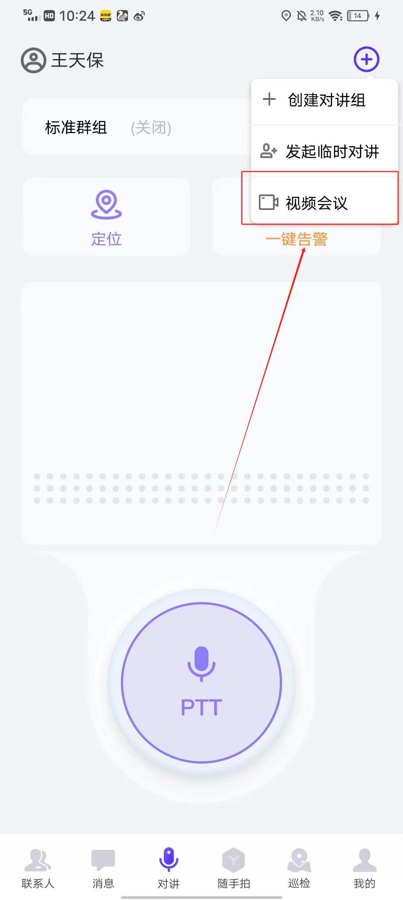
图3-29 App视频会议
App点击进入“视频会议”功能，界面显示“创建立即会议”、“正在进行会议”、“会议历史记录”；如下图3-30所示。
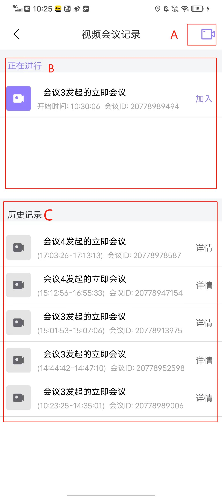
图3-30 App视频会议列表
A.创建立即会议 | B．正在进行会议列表 | C．会议历史记录列表 |
- 创建立即会议：用户点击创建立即会议按钮，界面跳转发起会议界面；下图3-31所示。
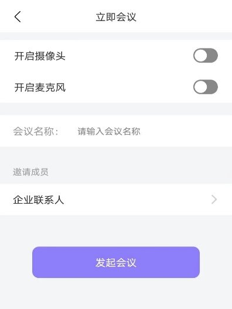
图3-31 创建会议
“开启摄像头”：默认关闭，选择开启后发起会议，进入会议时会议显示本机摄像头画面。
“开启麦克风”：默认关闭，选择开启后发起会议，进入会议时本机讲话成员均可收听。
“会议名称”：输入此次会议的名称，会议开始后显示此次会议主题。
“企业联系人”：点击“企业联系人”，可进入企业通讯录通过“部门”或“联系人”筛选邀请整个部门或目标成员共同入会；如下图3-32所示。

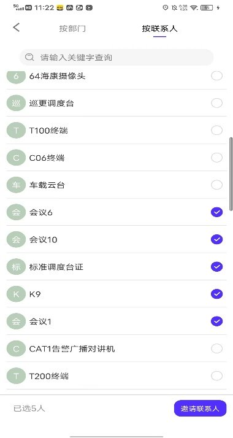
图3-32 邀请成员1
选择目标成员后，点击下方邀请联系人界面跳转至立即会议界面，此时企业联系人人数更新，如下图3-33所示。
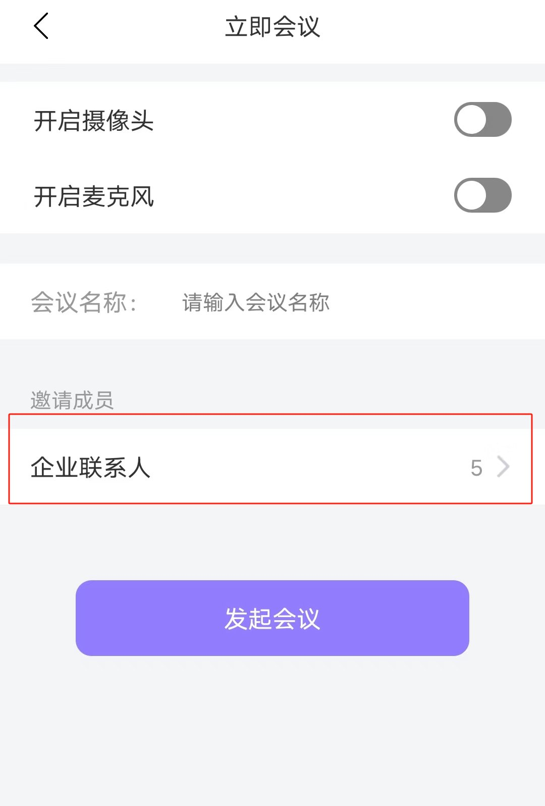
图3-33 邀请成员2
“发起会议”：点击发起会议即可开始此次会议。
- 正在进行会议列表：用户被邀请或中途退出的正在进行的会议皆显示在此列表中，可点击“加入”按钮再次进入此会议。
- 会议历史记录列表：会议历史记录列表显示用户参加过的会议记录，如用户被邀请却未参加此会议则用户会议历史记录列表不显示此会议；用户在历史记录中对目标会议进行详情溯源。
3.7.1 App开始会议
用户点击发起会议并开始会议后，界面进入会议系统；如下图3-31所示。
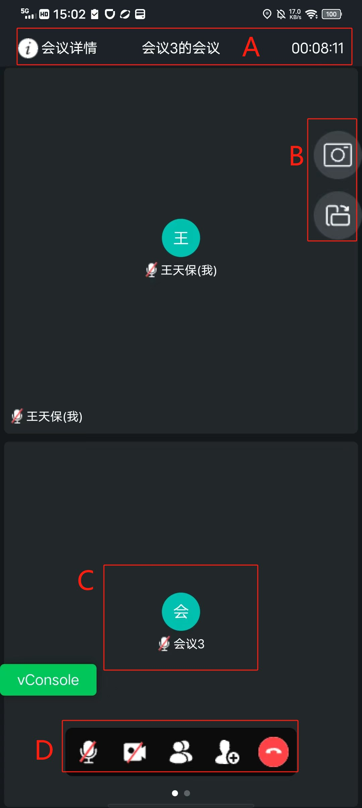
图3-34 会议界面
A.会议主题栏 | B.终端视频画面控制 |
C．会议成员视频 | D．会议控制操作栏 |
- 会议主题栏：会议主题显示会议详情、会议主题、会议进行时间等信息。
- 会议详情：点击会议详情，显示此会议主题、创建者、会议号与开始时间等详细信息，可点击复制会议详情发送给其他用户入会，如下图3-35所示。
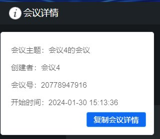
图3-35 会议详情
- 会议主题：App用户发起立即会议时填写的会议名称。
- 会议进行时间：开始会议后立即开始计时，记录此次会议进行时长。
- 终端视频画面控制：用户入会开启摄像头时，可通过此按钮更改前后摄像头控制画面。
- 会议成员视频：用户可在会议系统界面看到会议其他成员视频画面及麦克风状态，用户可双击目标用户视频窗口进行选看，选看时目标用户视频画面铺满全屏。若会议成员未开启视频则显示成员名称在视频栏中；
- 会议控制操作栏：用户可通过会议控制操作栏对视频、麦克风用户进行控制，会议发起人或主持人可对其他会议成员进行更多操作。
- 静音/解除静音：点击可对用户讲话进行静音/解除静音操作。
 开启/关闭视频：点击可对用户视频进行打开/关闭视频操作。
开启/关闭视频：点击可对用户视频进行打开/关闭视频操作。 成员列表：点击进入成员列表页面，可在成员列表中看到成员权限（主持人\与会者）、成员状态，主持人可对目标成员进行更多操作，如下图3-36所示。
成员列表：点击进入成员列表页面，可在成员列表中看到成员权限（主持人\与会者）、成员状态，主持人可对目标成员进行更多操作，如下图3-36所示。
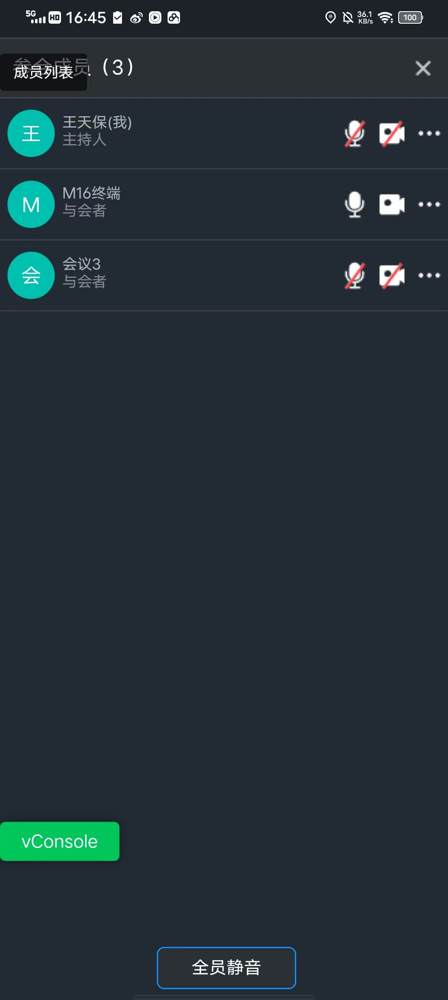
图3-36 成员列表
成员列表中可看到所有成员的麦克风和视频状态，点击成员右侧“更多选项”可对目标成员进行更多操作，如下图3-37所示。
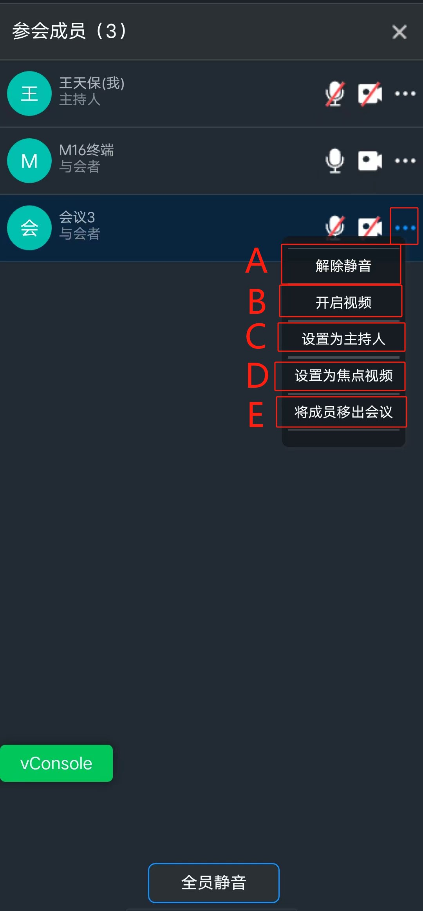
图3-37 更多选项
A．静音\解除静音 | B．开启\关闭视频 | C．设为主持人\与会者 |
D．设为焦点视频\取消 | E．将成员移出会议 |
- 静音\解除静音：主持人可对目标成员进行静音\解除静音操作，静音后目标成员讲话时会议成员均听不到，点击后目标成员右侧麦克风标识对应操作进行变化。
- 开启\关闭视频：主持人可对目标成员进行开启\关闭视频操作，开启目标成员视频时，会议成员均可看到目标成员画面；关闭目标成员视频时，会议成员均看不到目标成员画面；点击后目标成员右侧视频标识对应操作进行变化。
- 设为主持人\与会者：会议发起人可对其他成员进行主持人\与会者权限设置。设置后，目标成员会议屏幕提示“目标成员被设为主持人\与会者”。
主持人：目标成员被设为主持人后，可在会议成员列表中对其他会议成员进行“更多选项”操作。也可对会议发起人进行更多操作，无法将会议发起人设置为与会者。
与会者：与会者成员仅可对自己的会议进行功能操作。
设为焦点视频\取消：主持人可对目标成员进行设备焦点视频\取消焦点视频操作，设为焦点视频时目标成员视频图像显示在会议大屏中，所有会议成员会议画面均为此目标成员视频画面且无法更改，主持人进行取消焦点视频时会议画面后，其他会议成员屏幕提示可点击“取消选看”恢复视频画面。如下图3-38所示。
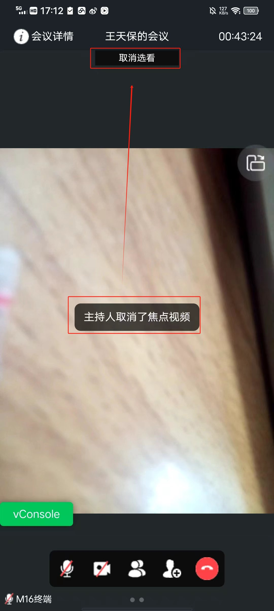
图3-38 焦点视频
- 将成员移出会议：主持人可对目标成员进行移出会议操作，成员被主持人移出会议后其他会议成员会议大屏提示目标成员离开会议。如下图3-39所示。
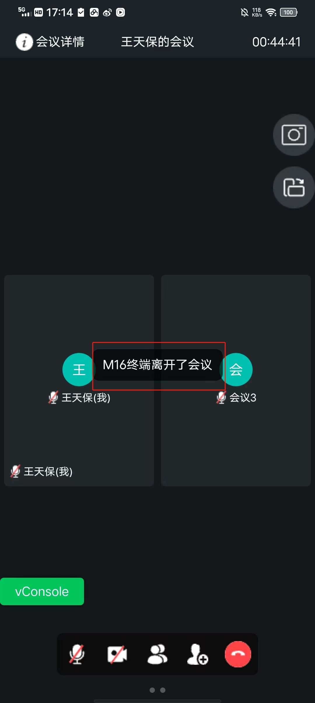
图3-39 成员离会提示
- 邀请成员：用户可在会议开始后点击邀请成员按钮，界面跳转进入企业通讯录通过“部门”或“联系人”筛选邀请整个部门或目标成员共同入会，选择目标成员后点击“邀请联系人”按钮即可邀请成员入会，如下图3-40所示。

图3-40 邀请成员
 结束\离开会议：用户点击红色结束按钮弹出“结束会议”“离开会议”两个选项，如下图3-41所示。
结束\离开会议：用户点击红色结束按钮弹出“结束会议”“离开会议”两个选项，如下图3-41所示。
图3-41 结束按钮
结束会议：用户点击结束会议，即结束此次视频会商，用户返回会议列表界面，会议其他成员返回各自应用界面，会议结束后用户可在会议列表中查看到此次会议详情。
离开会议：用户点击离开会议后，用户返回会议列表界面，此时会议正常进行，离开的会议显示在正在进行会议列表中可再次加入，如下图3-42所示。
图3-42 离开会议
第四章 设置
【我的】页面，为用户提供“汇特讯”APP相关的基础设置和系统高级设置选项。页面中间是当前登录用户的姓名和号码（加密显示）以及设置按钮，下方是便捷的设置功能，右上角是退出按钮。
图4-1 “我的”界面
4.1基础设置
- 定位设置：地图定位功能，默认关闭；若在管理平台配置了定位设置，则APP无法自己修改定位模式；
- 定位模式：可选“百度智能定位、百度GPS定位、GPS定位、Google定位、从不定位”，默认百度GPS定位。
- GPS定位间隔：范围是1-600的整数，默认为15秒；
- GPS上报间隔：范围是1-600的整数，默认为15秒；
- 语言通话设置
- AEC开关：默认开启；
- 声音放大器：默认关闭；
- 其他设置
- 来电自动接听：可选“关闭自动接听、语言来电自动接听、视频来电自动接听、全部自动接听”；
- 免打扰功能设置：默认关闭；
- 悬浮窗设置：默认关闭，选择为“开启”时将悬浮显示对讲按钮。
图4-2 基础设置界面
4.2系统高级设置
- 视频通话设置
- 摄像头：默认使用“前置”摄像头；
- 屏幕方向：可选“横屏、竖屏”；
- 色彩矫正：默认关闭；
- 缓冲级别：可选“等级一、等级二、等级三、等级四、等级五”，默认等级一；
- 分辨率：可选“320*240、640*480、1280*720、1920*1080”，默认640*480；
- 码率：当摄像头选用 320*240分辨率时，默认设置256kb/s；当选用640*480时，默认设置512kb/s；当选用1280*720时，默认设置是2048kb/s；当选用1280*720时，默认设置是4096kb/s；默认为512kb/s；
- 视频上传设置
- 摄像头：默认使用“后置”摄像头；
- 屏幕方向：可选“横屏、竖屏”；
- 色彩矫正：默认关闭；
- 缓冲级别：可选“等级一、等级二、等级三、等级四、等级五”，默认等级一；
- 分辨率：可选“320*240、640*480、1280*720、1920*1080”，默认1280*720；
- 码率：当摄像头选用 320*240分辨率时，默认设置256kb/s；当选用640*480时，默认设置512kb/s；当选用1280*720时，默认设置是2048kb/s；当选用1280*720时，默认设置是4096kb/s；默认为2048kb/s；
- 视频查看设置
- 摄像头：默认使用“后置”摄像头；
- 屏幕方向：可选“横屏、竖屏”；
- 色彩矫正：默认关闭；
- 缓冲级别：可选“等级一、等级二、等级三、等级四、等级五”，默认等级一；
- 分辨率：可选“320*240、640*480、1280*720、1920*1080”，默认1280*720；
- 码率：当摄像头选用 320*240分辨率时，默认设置256kb/s；当选用640*480时，默认设置512kb/s；当选用1280*720时，默认设置是2048kb/s；当选用1280*720时，默认设置是4096kb/s；默认为2048kb/s；
- 对讲来电设置
- 同优先级对讲来电：可选“提示消息、自动接听、自动拒绝”，默认提示消息；
- 其他设置
- 信令加密：默认关闭；
- SOAP加密：默认开启；
- 注册间隔：默认为1800秒。
图4-3 系统高级设置界面
4.3快捷设置
- 语言设置：可选“简体中文、English、跟随系统”；
- 修改密码：修改当前登录“汇特讯”用户的密码；
图4-4 密码修改界面
- 清除缓存：点击清除“汇特讯”终端上存储的文件信息，包括视频、语音、图片等；
图4-5 清除缓存界面
- 版本检测更新：手动检测是否有新的版本，若有新版本则弹出用户是否下载更新；若无新版本则提示“已经是最新版本”；
- 帮助与反馈：关于APP中一些常见问题的解答。
图4-6 帮助与反馈界面